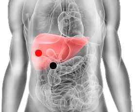

Chlamydia Trachomatis
duodeno - hígado
duodeno - riñón (I)
ojo - piloro
trocanter mayor - trocanter mayor mismo lado
uretra - uretra

Generalidades:
Hepatitis D, produce infecciones urogenitales, Linfogranuloma venereo (úlcera pequeña indolora en los genitales, hinchazón y enrojecimiento). En mujeres puede producir Infertilidad, vaginitis, absceso tubario (pus en trompa). En el Hombre: dolor testicular, uretritis, prostatitis. también se puede presentar anorexia y distención abdominal, hepatitis, ictericia (piel amarilla). Puede favorecer la arteriosclerosis y la artrítis reactiva.
Además puede producir falsa diabetes y problemas oculares como carnosidad en el ojo, desprendimiento de retina o ceguera.
Transmisión
El contagio se da por contacto sexual, ya sea en forma vaginal, anal u oral. Puede ser transmitida de la madre al bebé en el momento del parto generando infección ocular y neumonía neonatal.